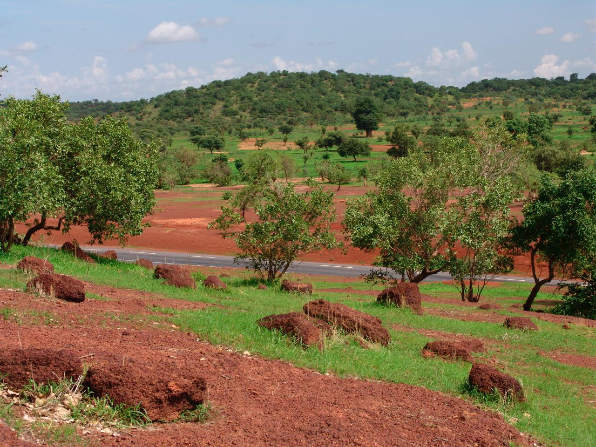
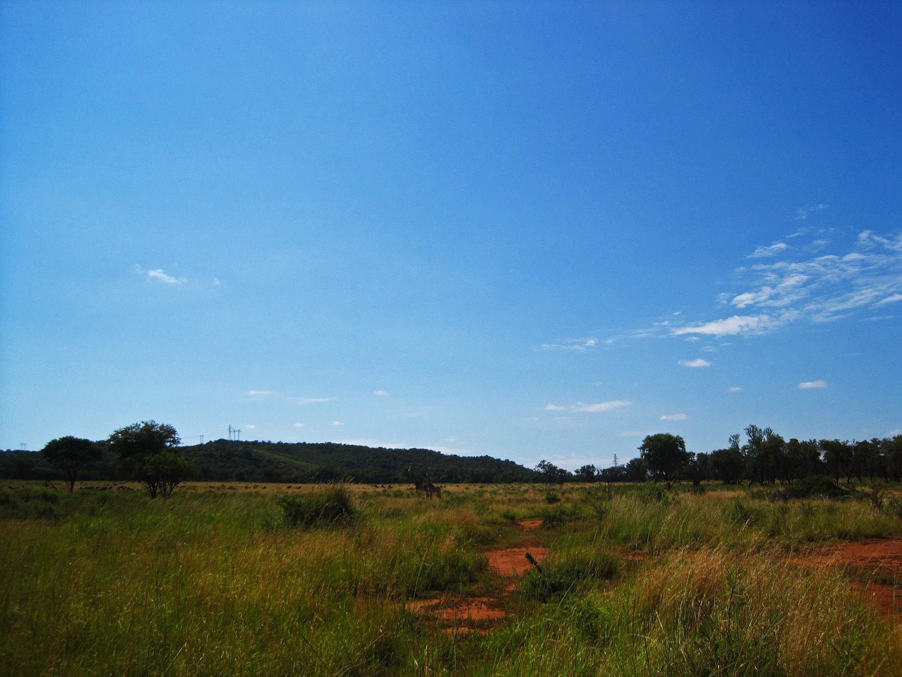
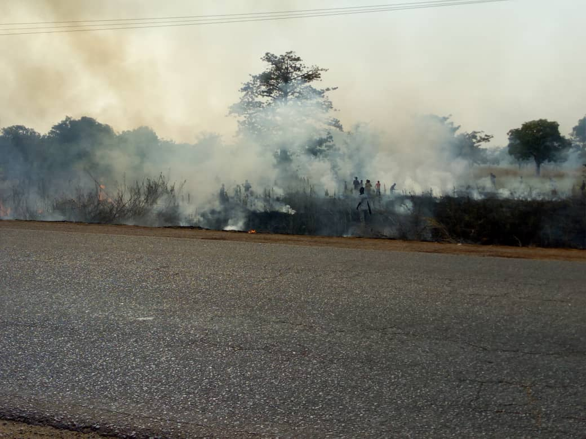
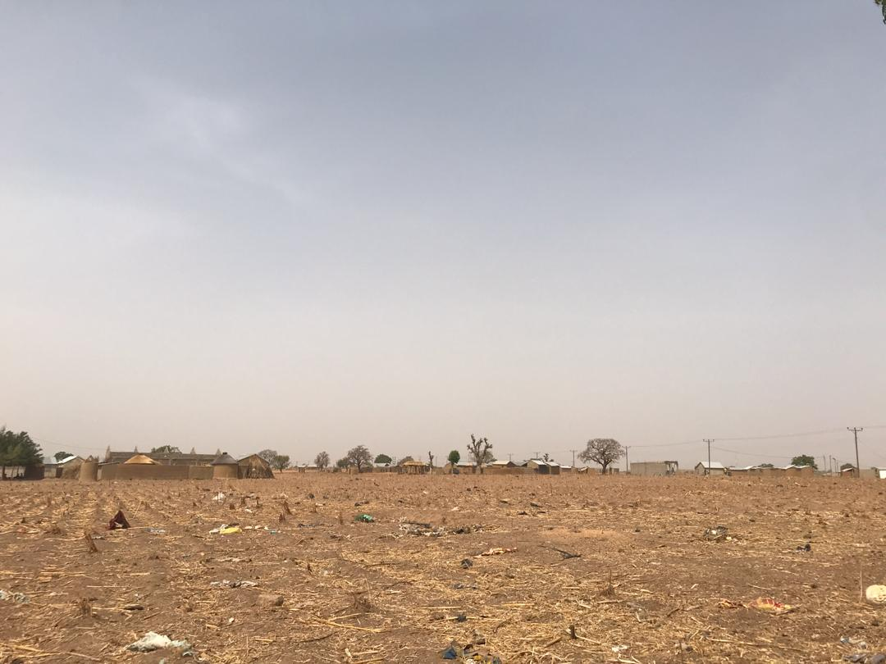
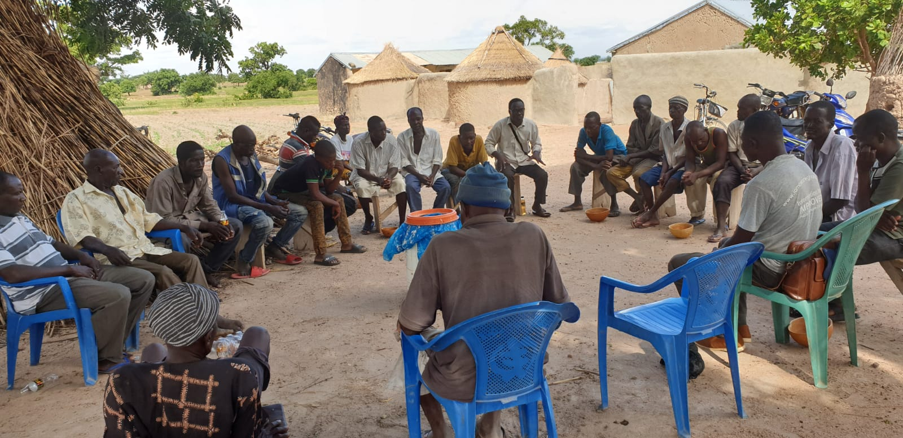
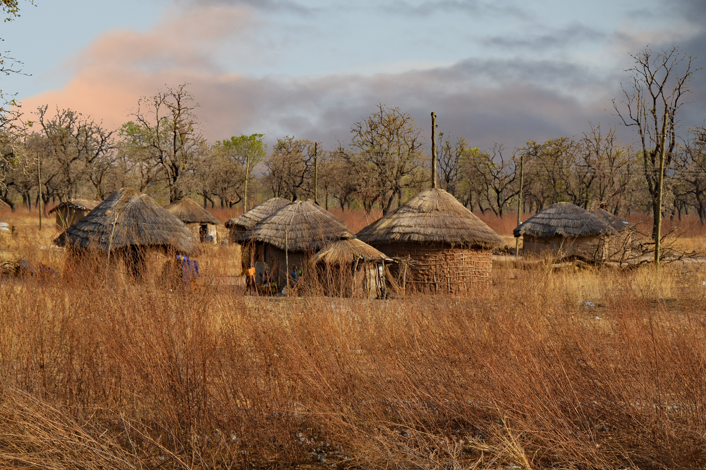
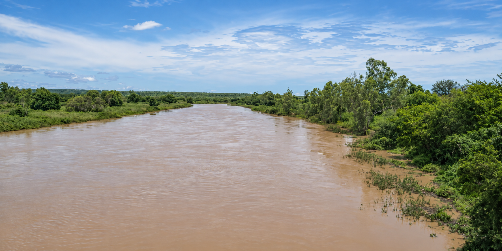

Healthy landscapes
Understanding and sustaining ecosystems, water and productive land

Ghana-Based · African-Led · Research · Innovation · Policy
The Savannah Futures Institute (SAFI) is a Ghana-based, African-led research, innovation and policy institute focused on Africa's inland and coastal savannas. We connect knowledge about landscapes, health, food, peace and culture to help communities and decision-makers shape resilient futures.
From Accra, we are building partnerships that turn research and indigenous knowledge into useful policy, practical innovation and responsible investment.
Savannas are living landscapes where people grow food, trade, sustain cultural traditions and build their futures.
Grasslands, woodlands, hills, rivers and wetlands connect livelihoods with biodiversity and water security. Changes in climate, land use, health and governance affect these relationships together. SAFI studies these connections so that decisions in one area account for their consequences in others.

Understanding and sustaining ecosystems, water and productive land
Supporting disease prevention, population health and resilient health systems
Strengthening knowledge for peace, social cohesion and human security
Connecting indigenous knowledge, food security and economic opportunity with evidence-informed development
Climate and Landscapes · Population Health · Food and Economic Transformation · Peace and Borderlands · Indigenous Knowledge and Culture. Our centres bring specialist expertise together around questions that matter to people and places.
Climate, ecosystems, water, biodiversity and landscape stewardship across savannas and river basins.
Explore centre →
How climatic, environmental and social conditions shape health and access to care.
Explore centre →
Nutritious food, resilient livelihoods and local value retention in savanna regions.
Explore centre →
Governance, mobility, insecurity and human security in borderland communities.
Explore centre →
Living knowledge, governance, language, heritage and social change.
Explore centre →
Connecting water, indigenous knowledge, learning and climate resilience through a proposed partnership with the Ghana National Commission for UNESCO.
Explore proposed partnership →Developing an evidence-led approach to assets, livelihoods, responsible investment and regeneration in Bawku Municipality and selected conflict-affected neighbouring areas.
Explore BAIRP →We work towards a shared process: frame the question, generate evidence, explore options, test responses and learn from results. Join us in developing research and partnerships that can support healthier landscapes, stronger communities and better decisions.
With the people who will use the findings
Interdisciplinary, rigorous and context-sensitive
Policy labs and stakeholder dialogue
Living labs and community-based research
Assess what can work elsewhere
Africa's savanna challenges require collaboration across disciplines, institutions and communities. We welcome partnerships that address a clear question and leave lasting capability.
Explore partnerships Contact us